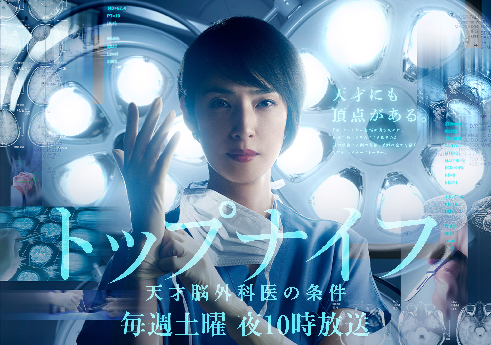
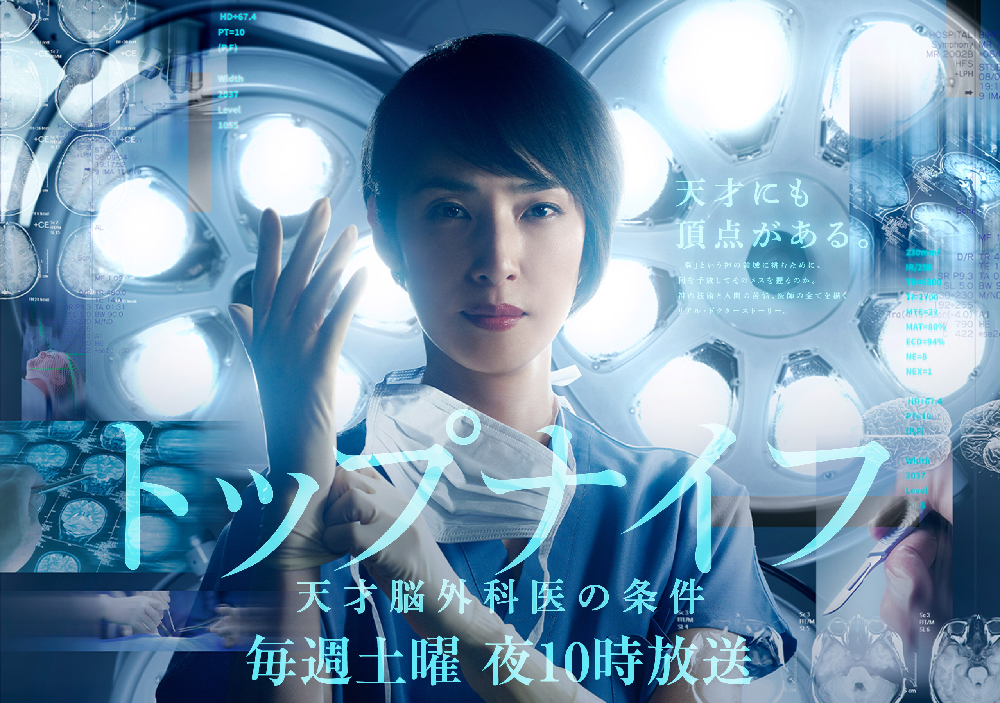

Product design
某テレビ業界の来期ドラマが公開されるにあたって、特設ページを作成しました。
私はフロントエンドエンジニアとして関わりましたが、今回の案件がこちらの現場(某テレビ業界)では初めての案件であるとともに、チーム開発やデザイナーさんとタッグを組んで対応する案件自体もキャリアの中では初でした。
具体的な担当内容は、WEBサイトのコーディングや、CMSでのデータの処理の記述やサムネイルの設定などです。
スペシャルコンテンツでは、企画の段階から関わり、お客様のご要望を形にしたときのイメージの落としどころを決定する手助けを行いました。>>その際の参考url
>>該当ページのurl
下記は番組のメインビジュアルとして起用されたものです。
期間中の電車内のポスターや、ogイメージなどは全てこれでした。  このWEBサイトはレスポンシブ/Chome,Safari,Firefox,Edge,IEに対応しています。
私が実装した後、デバックチームからの確認の上、修正してリリースしています。 この作品自体、コードブルーや医龍を手がけた林宏司さんが脚本を手がけており、
この作品自体、コードブルーや医龍を手がけた林宏司さんが脚本を手がけており、
キャストもかなり豪華なので、携わらせてもらえるだけで大変良い経験だったと思います。
初回の公開を拝見して、本当に色々な人の仕事の上で、作品が成り立っていることを痛感したとともに、
デザイナーさんが作成したロゴが劇中に使用されていることに感動しました。
期間中の電車内のポスターや、ogイメージなどは全てこれでした。  このWEBサイトはレスポンシブ/Chome,Safari,Firefox,Edge,IEに対応しています。
私が実装した後、デバックチームからの確認の上、修正してリリースしています。
この作品自体、コードブルーや医龍を手がけた林宏司さんが脚本を手がけており、キャストもかなり豪華なので、携わらせてもらえるだけで大変良い経験だったと思います。
初回の公開を拝見して、本当に色々な人の仕事の上で、作品が成り立っていることを痛感したとともに、
デザイナーさんが作成したロゴが劇中に使用されていることに感動しました。